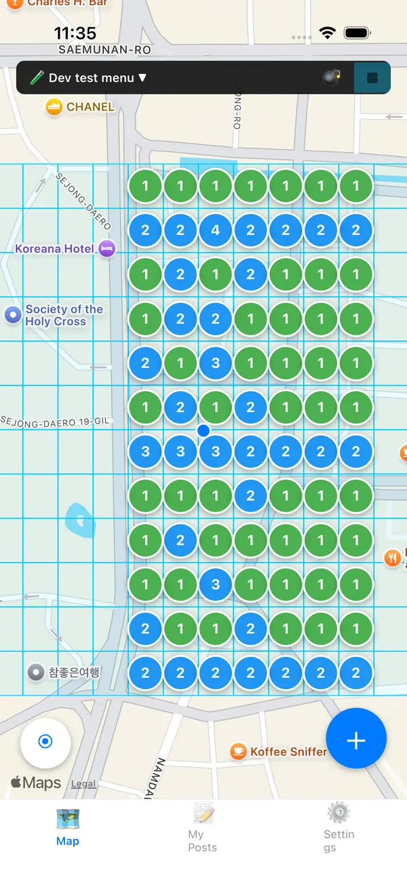
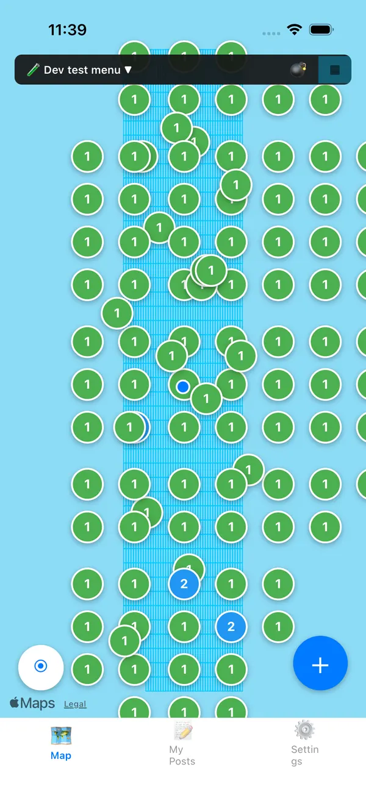
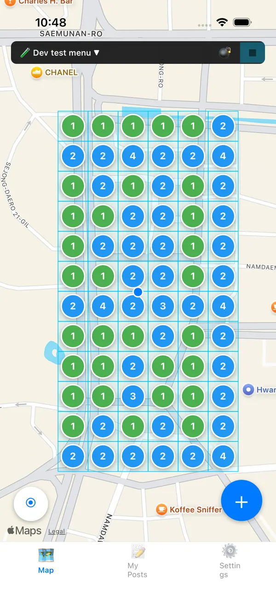
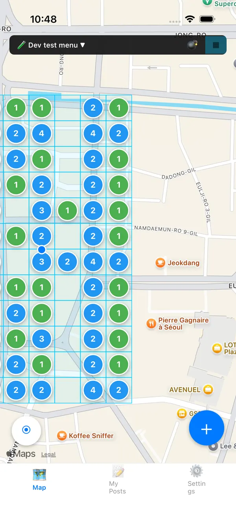
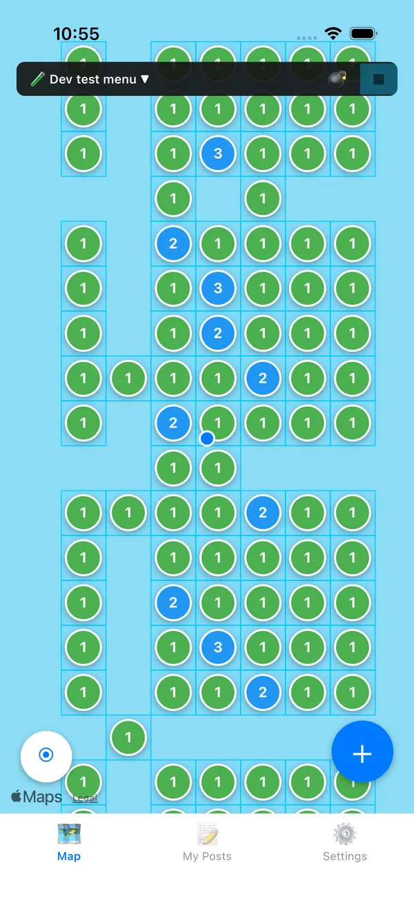
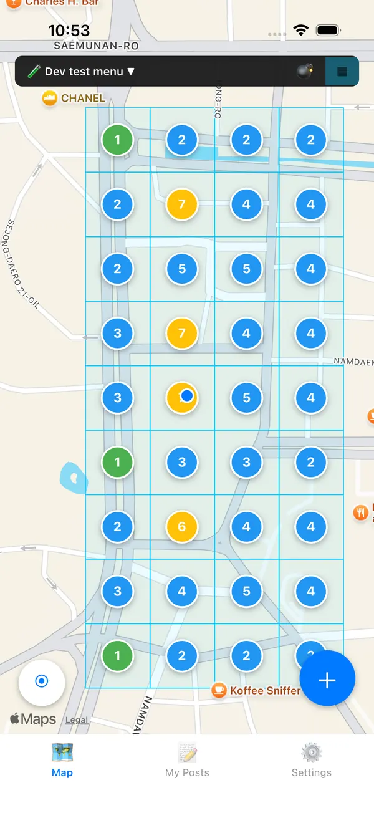
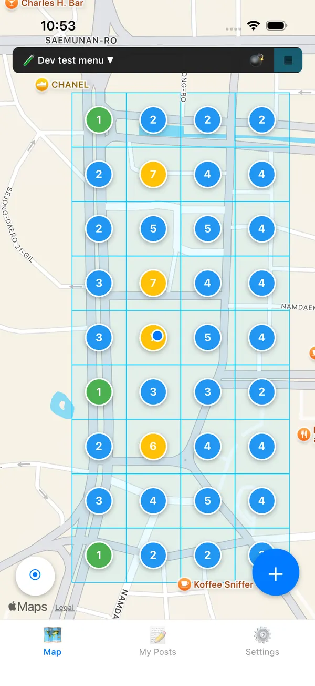
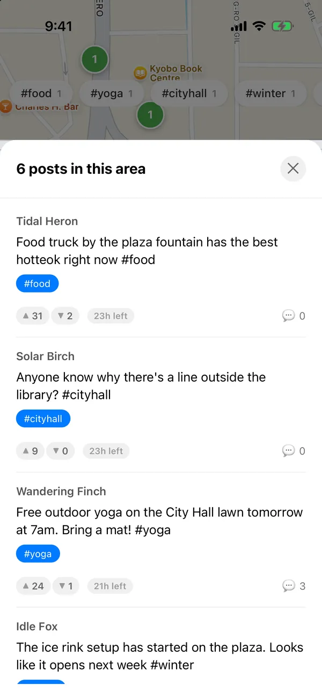
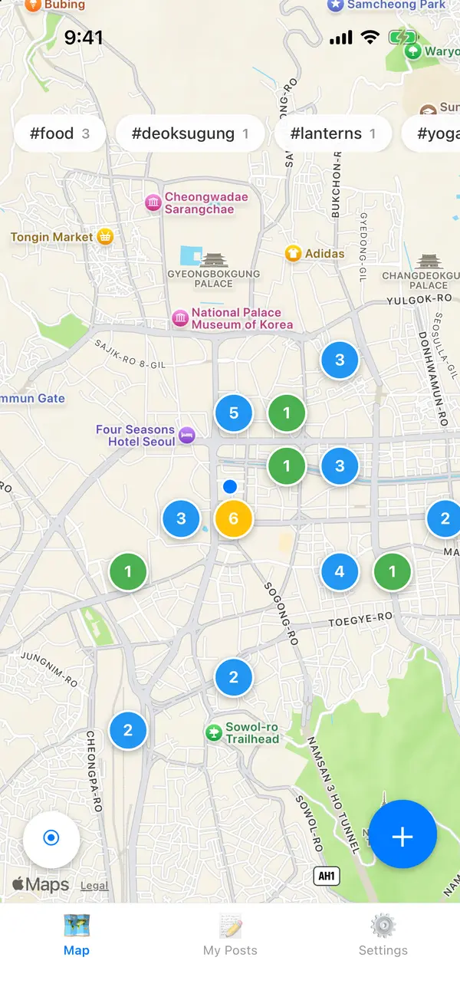
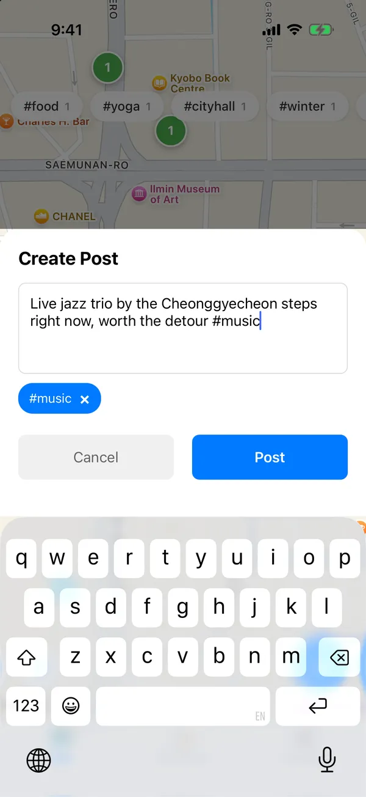

What it does
- A feed of posts near your current location.
- A map showing your position and nearby posts together.
- Anonymous posting: no profiles and no followers.
- Posts fade: 24 hours by default, extended by upvotes from people nearby.
- Voting and commenting only work within 50 m of a post.
How it works
The app and the API live in one monorepo. Supabase provides the database and authentication.
"Posts near me" is a bounding-box query on a geo index, not a radius filter. Each post stores a PostGIS geography point with a GIST (R-tree) index. The app sends the visible map area and the screen size. The server snaps that box to fixed steps, so markers and caching stay stable as you pan. It then groups posts into sectors from a grid anchored to the world in Web Mercator coordinates, and returns a post count and bounds for each one. Posts themselves are fetched only when you tap a sector.
Key decisions
Keeping dev-only routes out of production
- problem
- Debug and test routes (under
app/dev/) are useful while building, and dangerous if one ships. - choice
- A pre-commit hook that makes me confirm any commit adding a route, plus a CI check on backend changes. Only dev and test route patterns are restricted. Product routes can be named anything.
- result
- Guardrails cover the risky case and stay out of the way otherwise.
Scoping out the App Store
- problem
- Apps built on anonymous user content must meet Apple's moderation requirements: filtering objectionable posts, reporting, blocking users, and published contact details.
- choice
- Ship through TestFlight and keep App Store release out of scope until a real moderation system exists.
- result
- A finished, installable build. I can describe exactly what a public release would take.
Counts first, posts on tap
- problem
- Drawing every post as a pin floods the map when zoomed out and sends far more data than anyone looks at.
- choice
- The server returns a count per map sector. Posts load only when you tap one.
- result
- Small responses, an evenly spaced map at any zoom level, and fewer post locations exposed to someone scanning the map.
Posts that fade
- problem
- A local feed is only useful if it's current.
- choice
- Posts last 24 hours, plus 2 hours per upvote, capped at 7 days. Expired posts are archived, then deleted after 30 days. Similar to how Waze reports expire.
- result
- People nearby decide what stays visible. The numbers are starting values, to be tuned with real usage.
Location and anonymity: what's protected, and what isn't yet
- problem
- With exact coordinates, an "anonymous" post made from home points to that home.
- today
- Exact coordinates are stored on the server for the 50 m proximity checks. Posts never carry their own coordinates to the app. The finest level a client sees is a 3 m square node holding its posts, and zoomed out it sees only counts per sector.
- honestly
- 3 m is about the width of a room, so on its own it isn't real privacy protection. Coarser locations for viewers, or random offsets added when a post is written, are planned.
The hard part: a map grid that's square and stable
Zoomed out, Loba groups posts into map sectors and shows a count for each. Getting those sectors right took three versions. I ran each one against the same 160 posts in two places: central Seoul (37.6°N), and the Arctic Ocean at 80°N, where a degree of longitude is only about 19 km wide.
Version 1 · fixed latitude/longitude grid
Stable, but the wrong shape
Sectors were fixed steps of latitude and longitude, anchored to the world, so they held still while you panned. But a degree of longitude shrinks with latitude (by cos φ) and a degree of latitude doesn't. In Seoul the cells were already about 20% taller than wide. At 80°N a longitude step is about 5.8× narrower, so the grid collapsed into thin slivers holding one post each: roughly 100 overlapping "1" markers (#60).


Version 2 · grid cut from the viewport
The right shape, but it moved
#63 sized the grid from the visible region, so cells came out roughly square at any latitude. But the grid's origin came from the screen, so every pan re-cut it and posts regrouped. The same place showed a different picture depending on how you got there (#93).


Version 3 · world-anchored Web Mercator grid
Square and stable
#93 anchored the grid to the world again, this time in Web Mercator coordinates, the projection the map itself draws in. A cell's boundaries depend only on the zoom level, never on where the viewport sits. Cells are square on screen at every latitude, and panning away and back returns the identical picture.



Two fixes along the way: upgrading react-native-maps to 1.29 on React Native's new architecture fixed markers that went missing (#95), and the first fetch now uses the map's real region instead of a placeholder, which had sized sectors for the wrong view (#97).
How I tested: every version read the same local database and ran the same scripted sequence (launch, pan left, pan up, pan back, zoom in, recenter) with a developer toggle that draws the sector outlines. Differences between versions come from the grid code, not the data.
Screens



What a public release would take
- Content filtering and a report flow for posts.
- Blocking abusive users, which is hard to do while staying anonymous.
- Location protection that holds up: coarser positions for viewers, or random offsets added when a post is written.
- Published contact information and a moderation process.